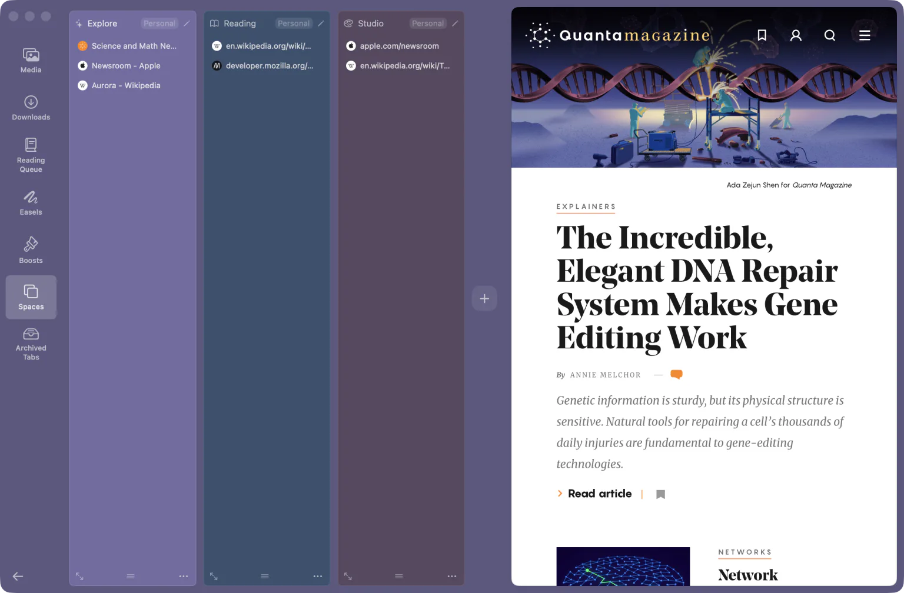
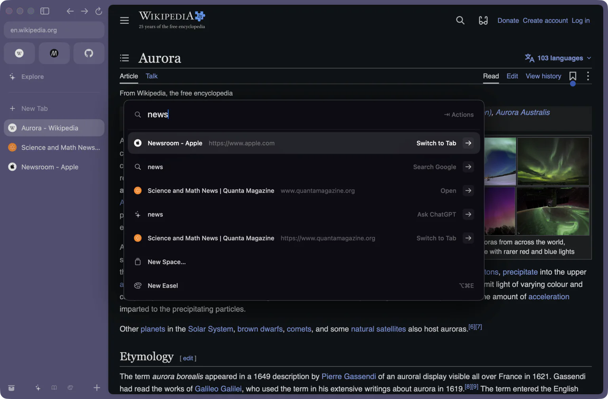
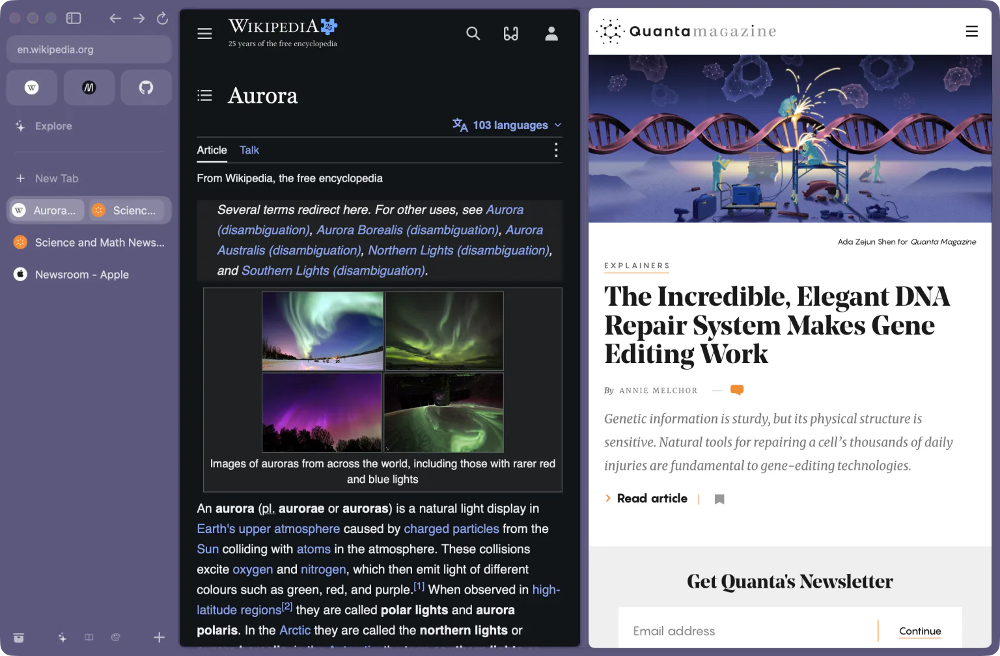

Little Vane
A quick look, without the clutter.
A small single-page window for links from other apps. Its menu moves the page into your main window when you want to stay.

Vane is a free, open-source native Mac browser. Sidebar tabs, Spaces, Split View and Little Vane.
Free and open source, for macOS 26 or later.
Vane is a Mac browser that gives every tab a place. Today’s tabs live in a sidebar, every part of your life gets its own Space, and the rest of the window gets out of the way. Native SwiftUI and WebKit. Free, open source, and private from the first launch.
Sidebar
Favourites stay with you across Spaces. Pinned pages keep their place. Today’s tabs sit underneath and archive themselves after a while.

Spaces
Give work, study and everything else their own tabs, colour and profile. Switch with a swipe, and see them all in the Library.

Command bar
⌘L or ⌘T opens one bar to enter an address, search the web or jump to a tab that is already open.

Split View
Put a second page beside the current one. Up to four panes share one row in the sidebar.

Little Vane
A small single-page window for links from other apps. Its menu moves the page into your main window when you want to stay.
On for each profile, with private windows and per-site camera and microphone decisions.
Clear the page around the words, adjust the type, or save articles to read offline.
Save and fill through the macOS keychain. Separate profiles keep separate credentials.
Your GitHub pull requests in the sidebar, refreshed as work opens, changes and closes.
Supported Chrome Web Store extensions, unpacked WebExtensions and signed Safari extensions.
Bookmarks and history from Arc, Safari, Firefox and Chrome. Passwords from a CSV.
Privacy
Your library, history and tabs are stored locally. AI features and iCloud sync stay off until you turn them on, and passwords have their own iCloud Keychain switch. The privacy policy lists every request Vane makes, and the source is public.
Read the privacy policyAs Vane starts
Free and open source, for macOS 26 or later. Bring your bookmarks and history with you.